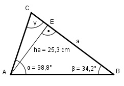

Aufgabe 144 Berechnen Sie die Seite a, wenn ha = 25,3 m, α = 98,8° und β = 34,2°.

γ = 180° - 98,8° - 34,2° = 47° Im Dreieck AEC: ha sin γ = ----- |*b b b * sin γ = ha |:sin γ ha 25,3 cm 25,3 cm b = ------- = --------- = --------- = 34,6 cm sin γ sin 47° 0,7314 Sinussatz: a b ------- = ------- |*sin α sin α sin β b * sin α a = ----------- = sin β 34,6 cm * sin 98,8° 34,6 cm * 0,9882 = --------------------- = ------------------ = sin 34,2° 0,5621 = 60,8 cm